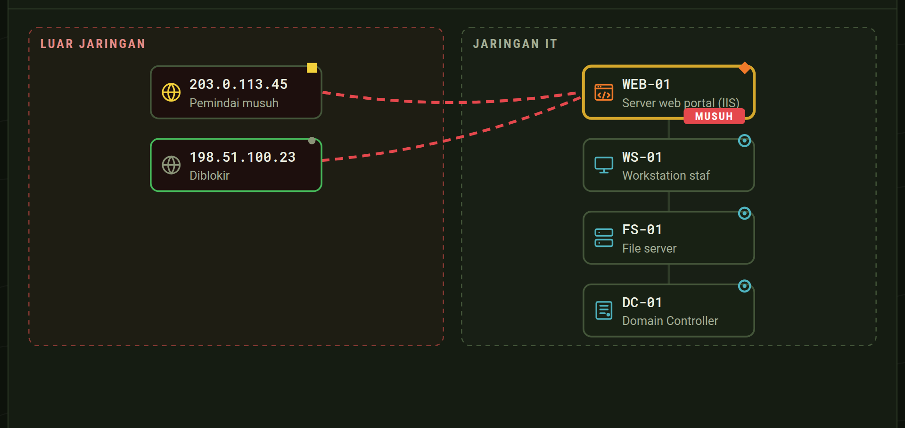
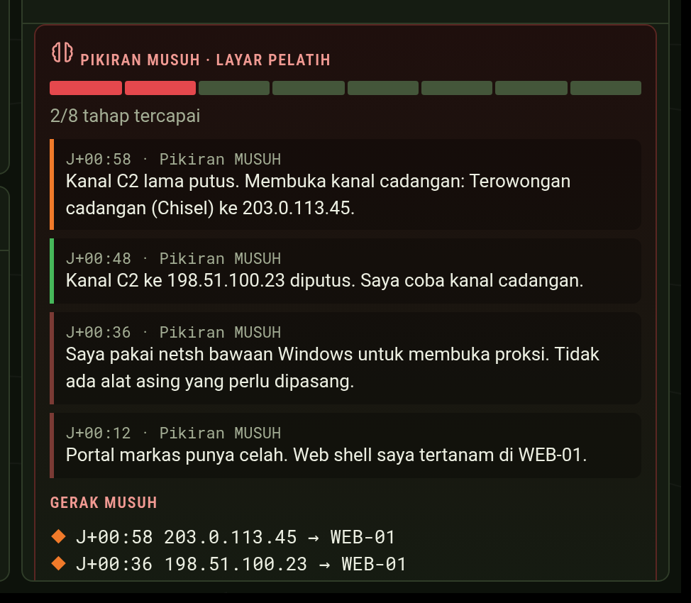

Mesin Uji Serangan dan Ketahanan
Lawan tanding siber untuk setiap satuan TNI AD. Satu laptop, tanpa internet. Lawannya beradaptasi tetapi adil, nilainya bisa diperiksa ulang.
Penyerang terlatih yang mengeksploitasi Windows, menaikkan hak akses, mengincar direktori jaringan.
Analisis log, identifikasi indikator kompromi, isolasi jaringan, penghentian sistem terkendali.
Menilai pencapaian sasaran latihan dengan standar GO/NO-GO.
Karena butuh tiga tim, latihan seperti ini terikat pada acara besar: Keris Woomera, CYBEREX Super Garuda Shield, turnamen WMS. Di satuan, antar acara, tidak ada lawan tanding.
Sumber: Puspen TNI, "TNI–ADF Perkuat Pertahanan Siber melalui Simulasi Terpadu Keris Woomera 2026", korem072.tni-ad.mil.id, 17 Okt 2026
| Arahan | Jawaban MUSUH |
|---|---|
| "TNI harus terus menyesuaikan diri, belajar, belajar, belajar, dan berlatih, berlatih, berlatih" | Latihan red vs blue bisa diulang di satuan kapan saja |
| "Sistem yang berlaku di TNI harus sistem prestasi, bukan sistem sekadar senioritas" | Nilai adil per prajurit yang bisa diperiksa ulang |
| "Kita harus mandiri ... teknologi, industri pertahanan" | Dibuat di Indonesia, satu berkas program, tanpa layanan luar negeri |
Presiden Prabowo Subianto, amanat HUT ke-81 TNI, 5 Okt 2026 (detik.com); Praspa TNI-Polri, 22 Jul 2026 (antaranews.com)
Bertahan dari konsol: membaca peringatan dan log, mengisolasi host, memblokir alamat, mereset akun, memblokir Modbus.
Menyerang jaringan latihan. Bila satu jalan ditutup, memilih rute lain menurut graf serangan.
Menilai setiap sasaran GO/NO-GO dan menerbitkan rapor. Pelatih memberi kode latihan, memantau, menandatangani.

Peta jaringan peserta: jalur lama diblokir, jalur baru muncul

Layar pelatih: pikiran MUSUH, tidak terlihat peserta